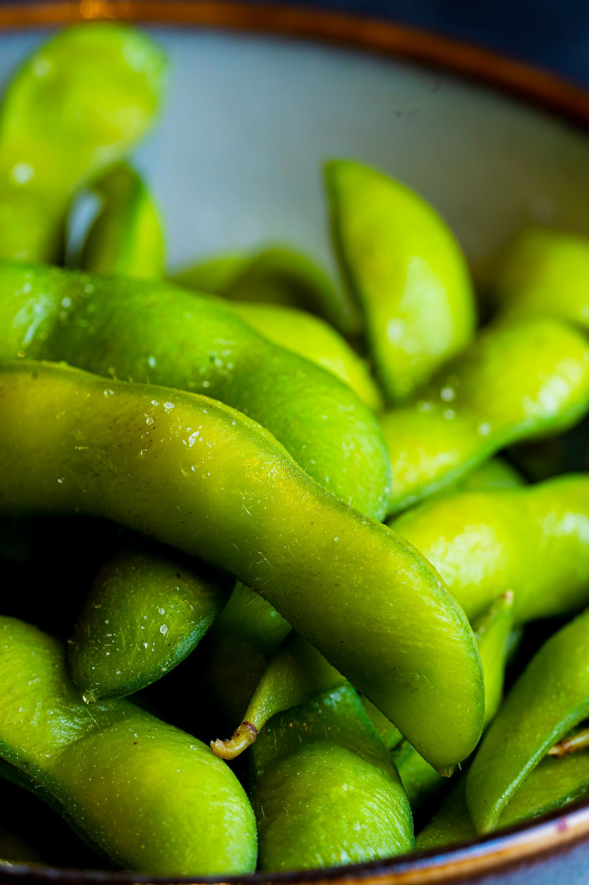

Unsere
Speisekarte
Über 150 japanische Spezialitäten – von Nigiri und Maki über Warm Dishes bis zu Dinner-Spezialitäten vom Grill. Bestellen Sie bequem per iPad, so oft Sie möchten. Alle Gerichte auch zum Mitnehmen.
All you can eat – Preise
Lunch
Täglich 12:00 – 15:00 Uhr · Küche bis 14:30 Uhr
Dinner
Täglich 17:00 – 22:30 Uhr · Küche bis 22:30 Uhr
Die Regeln
Damit alle Gäste entspannt genießen können – vielen Dank für Ihr Verständnis!
2,5 Stunden
Bestellen Sie 2,5 Stunden lang von unserer Karte.
5 Items pro Runde
Lunch & Dinner: Pro Bestellrunde max. 5 Items pro Person bestellbar.
Nächste Runde
Die nächste Bestellrunde können Sie aufgeben, wenn Sie die vorherige Bestellung verzehrt haben.
Keine Verschwendung
Verschwendung wird nicht geschätzt. Bitte bestellen Sie nur so viel, wie Sie verzehren können.
Mindestverzehr
Bei Teilnahme am Buffet 1 Getränk Mindestverzehr, ansonsten 1,00 € Zuschlag.
Per iPad bestellen
Ihre Bestellung geben Sie bequem per iPad direkt am Tisch auf.



Unsere Speisen
Zusatzstoffe
- 1) mit Farbstoff
- 2) mit Konservierungsstoff
- 3) Aufgrund des hohen Quecksilbergehaltes kann der übermäßige Verzehr abführend wirken.
Tisch reservieren!

Besuchen Sie uns
Marktstr. 249, 47798 Krefeld
Tel.: 02151 - 9756668
Öffnungszeiten
Dienstag – Sonntag
Lunch: 12:00 – 15:00 Uhr
Dinner: 17:00 – 22:30 Uhr
Montag Ruhetag